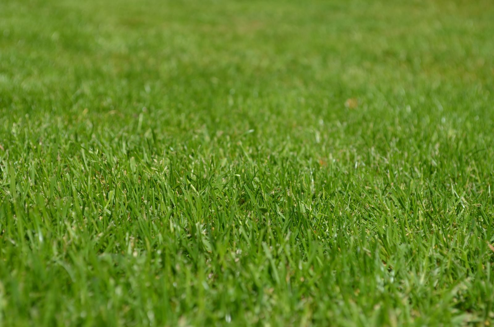

Ce que nous faisons
Nos services
Pour un petit jardin de ville ou un grand terrain, nous intervenons de la conception à l'entretien.
Pour un petit jardin de ville ou un grand terrain, nous intervenons de la conception à l'entretien.

On dessine avec vous un jardin adapté à votre terrain, à l'exposition et au temps que vous voulez y passer.
Des haies nettes et des arbres en bonne santé, taillés au bon moment de l'année.

Semis, gazon en rouleau ou rénovation d'une pelouse fatiguée.

Des espaces pour vivre dehors, solides et bien intégrés au jardin.

Carrés potagers, bacs surélevés et petits vergers pour récolter chez soi.